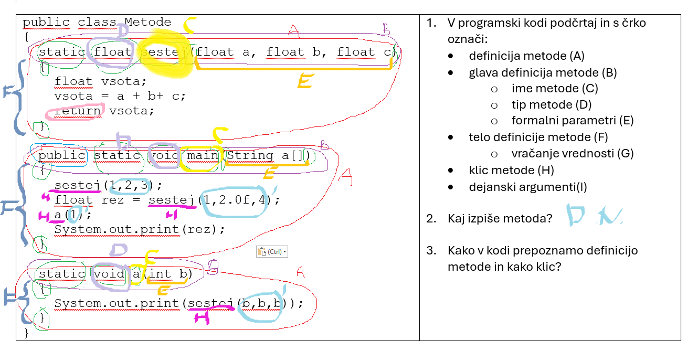

Polja ali tabele (ang. array)
Oglej si video. yt
Polje (array) omogoča shranjevanje več vrednosti istega podatkovnega tipa v eni spremenljivki.
Primer:
int [] ocene = {4,5,4,2,3}; // hranimo 5 vrednosti |
|---|
Izpis:
4 [I@10f87f48 |
|---|
Če je prvi izpis pričakovan, je drugi nenavaden. V drugem primeru izpišemo naslov (ang. reference) v pomnilniku. Pri vseh referenčnih tipih se v spremenljivki hrani naslov v pomnilniku (RAM), kjer so dejansko shranjeni podatki.
| "primitivni" podatkovni tip (ang. primitivne) | referenčni podatkovni tipi (ang. reference) |
|---|---|
byte short int long float double char boolean |
String Array Random Scanner Object |
Če želimo dostopati do elementa polja, moramo do njega dostopati drugače. Dodati moramo številko indeksa.
Indeks je zaporedna številka, ki pove, na katerem mestu v polju se nahaja element polja.
Indeks napišemo v oglati oklepaj.
Prvi indeks je 0.
Primer:
|
|---|
Izpis:
4 2 Exception in thread "main" java.lang.ArrayIndexOutOfBoundsException: Index 5 out of bounds for length 5 |
|---|
Skica polja ocene kot tabela:
| indeks | 0 | 1 | 2 | 3 | 4 |
|---|---|---|---|---|---|
| vrednost | 4 | 5 | 4 | 2 | 3 |
Ključne lastnosti polj
Fiksna dolžina: Velikost polja je določena ob njegovi inicializaciji in se med izvajanjem programa ne more spreminjati.
Homogenost: Vsi elementi v polju so istega podatkovnega tipa.
Indeksiranje: Do elementov polja lahko dostopamo z uporabo indeksov, ki začnejo pri 0.
Privzete vrednosti: Če začetne vrednosti ne določimo, so privzete vrednosti 0 in null pri Stringu.
Deklaracija in inicializacija polj
Deklaracija
podatkovni_tip [] ime_spremenljivke;
ali
podatkovni_tip ime_spremenljivke[];
Primer:
float [] temperature; // deklaracija polja realnih vrednosti z imenom temperature - velikost še ni določena
Inicializacija
ime_spremenljivke = new podatkovni_tip[velikost_polja];
Velikost polja mora biti celo število;
Primer:
temperature = new float[30]; // polje za 30 realno številskih vrednosti. Vrednosti v polju so 0,0.
Lahko napišemo tudi v enem stavku
float [] nekaj = new float[30];
Še ena deklaracija (če poznamo vrednosti pri deklaraciji)
podatkovni_tip [] ime_spremenljivke = {vrednost1, vrednost2, …};
Primer:
int []ocene = {4,4,5,5,5}; // to polje je veliko 5
Dostop do vrednosti
ime_polja[indeks]
Primer:
int []ocene = {4,4,5,5,5};
System.out.print(ocene[2]); // izpis tretjega elementaocene[0] = 1; // sprememba prvega elementa
Velikost polja
int a = ocene.length; // zapišemo ime polja, piko in besedo length (v
primeru vrednost 5)Pogoste napake
int [] a = new int[10]; a[1]; // ni prvi element b[0] = 10; // pozabljena inicializacija String [] c = {"ena","dva",3,'4'}; // mešanje podatkovnih tipov |
|---|
Delo s polji
Za sprehod skozi polje uporabimo zanko. Najbolj pogosto for. Začetno vrednost nastavimo na 0, zadnja vrednost je vedno za ena manj kot velikost polja. Števec povečujemo za ena.
while(i < a.length) i++; |
|
|---|
Izpis
| 10 9 5 7 |
|---|
Ideja: Vse ostane isto razen indeksa. Indeks pa
a[0]
a[1]
a[2]
a[3]
a[4]
Ponovimo:
Inicializacija polja
| public static void main(String[] args) { // 1 char [] a = new char[5]; // 2 char [] b; b = new char[5]; // 3 char [] c = {'a','b','1','A',','}; // 4 char d [] = new char[5]; // 5 char e []; e = new char[5]; // 6 char f [] = {'a','b','1','A',','}; // 7 - NAPAČNO - manjka inicializacija char g []; } |
|---|
Kratki kviz polja (array):
1 Kaj predstavlja tabela (array) v Javi?
A) Spremenljivko, ki hrani en podatek
B) Spremenljivko, ki hrani več vrednosti različnih tipov
C) Spremenljivko, ki hrani več vrednosti istega tipa
D) Primitivno spremenljivko
2 Kako pravilno deklariramo in inicializiramo tabelo celih števil v Javi?
A) int t;
B) int t[] = new int;
C) int[] t = new int[5];
D) int t = new int[5];
E) int t[] = new int[5];
2a Kako zaradi lažje predstave in dela narišemo polje?
A) z valjem
B) s kvadrom
C) s tabelo
D) s krogom
E) s škatlo
3 Kakšen je indeks prvega elementa v tabeli?
A) 1
B) 0
C) -1
D) Odvisno od velikosti tabele
4 Kaj vrne izraz t.length?
A) Zadnji indeks tabele t
B) Število elementov v tabeli t
C) Največjo vrednost v tabeli t
D) Velikost tabele t v bajtih
5 Kaj se zgodi, če dostopamo do elementa izven meja tabele?
A) Program se normalno izvede
B) Java vrne vrednost 0
C) Pojavi se napaka med prevajanjem
D) Pojavi se ArrayIndexOutOfBoundsException
6 Kaj pomeni, da ima tabela v Javi fiksno velikost?
_______________________________________
7 Kako dostopamo do tretjega elementa v tabeli int[] a?
_______________________________________
8 Kakšna je privzeta vrednost elementov v tabeli tipa int?
_______________________________________
9 Napiši en razlog, zakaj so tabele uporabne v programiranju.
_______________________________________
10 Katero zanko najpogosteje uporabljamo za pregled vseh elementov tabele?
_______________________________________
11 Napiši sled programa. Beleži vrednost spremenljivk in izpis!
| public class Polja3 { public static void main(String[] args) { float pol [] = new float[7]; pol[1]=7; pol[2]=-1; pol[4]=1.2f; pol[6]=-10f; for(int a = 6 ; a > 1 ; a--) { if(a % 2 == 0) System.out.print("S "); else System.out.print("L "); System.out.print(pol[a]); if(pol[a] < 0 ) System.out.print(" <0"); else System.out.print(" >=0"); System.out.println(); } } } |
|---|
12 Polje z imenom kocke velikosti 1000 napolni z naključnimi števili med 1 in 6. Izpiši celotno polje.
Naloge:
Ustvari polje 5 celih števil. Polje imenuj p1. Vstavi števila 1,6,5,3,2. V tem vrstnem redu.
p1
| 0 | 1 | 2 | 3 | 4 |
|---|---|---|---|---|
| 1 | 6 | 5 | 3 | 2 |
Prva možnost
int [] p1 = new int[5];
p1[0] = 1;
p1[1] = 6;
p1[2] = 5;
p1[3] = 3;
p1[4] = 2;
Druga možnost
int [] p1 = {1,6,5,3,2};
Ustvari polje za 3 imena sošolcev. Polje imenuj p2. V novi vrstici jih shrani v polje. Enega po enega.
p2
| 0 | 1 | 2 |
|---|---|---|
| "Peter" | "Pia" | "Maja" |
Izpiši na ekran vse vrednosti iz polja p2. Ne uporabi zanke. Uporabi samo en stavek.
Izpiši na ekran vse vrednosti iz polja p1. Uporabi zanko for.
Iz polja p1 izpiši samo števila deljiva s 3. Uporabi zank while.
Ustvari polje p3 za 200 števil. V polje vstavi naključna števila med -50 in -40.
Dvodimenzionalna polja (tabele, matrike)
Izgled dvodimenzionalnega polja
Dvodimenzionalno tabelo si lahko predstavljamo kot tabelo s stolpci in vrsticami. Spodnja tabele velikosti 3x3 hrani cela števila. Predstavlja stanje v igri križec - krožec (tic-tac-toe), kjer igrata dva igralca. Vrednost 0 predstavlja, da v celici še ni vpisano nič. Število 1 predstavlja krožec, število 2 križec.
|
|
|
|
||||||||||||||||||||||||||||||||||||
|---|---|---|---|---|---|---|---|---|---|---|---|---|---|---|---|---|---|---|---|---|---|---|---|---|---|---|---|---|---|---|---|---|---|---|---|---|---|---|---|
| začetno stanje | igralec 1 začel | igralec 2 nadaljeval | igralca 2 zmaga |
Uporaba
Deklaracija
a) podatkovni_tip [][] ime_spremenljivke = new podatkovni_tip[vel1][vel2]; b) podatkovni_tip [][] ime_spremenljivke = ime_spremenljivke = new podatkovni_tip[vel1][vel2]; c) podatkovni_tip [][] ime_spremenljivke = {{a1,a2, ...},{b1,b2, ..}, ...}; d) podatkovni_tip ime_spremenljivke[][] = new podatkovni_tip[vel1][vel2]; Razlaga: število zaprtih oklepajev pomeni število dimenzij []pomeni eno dimenzijo [][] pomeni dve dimenziji [][][] pomeni tri dimenzije vel1...velikost prve dimenzije vel2...velikost druge dimenzije Opomba:
|
|||||||||||||
|---|---|---|---|---|---|---|---|---|---|---|---|---|---|
a) int [][] polje1 = new int[4][3]; |
|
||||||||||||
b) float [][] polje2; polje2 = new float[2][2]; |
|
||||||||||||
c) double [][] polje3 = {{6,1,2},{-2,8,4}}; |
|
||||||||||||
d) |
|
||||||||||||
Risba
int [][] p2D_1 = new int[2][3];
skica polja p2D_1 (polje se inicializira z vrednostmi 0)
| 0 | 1 | 2 | |
|---|---|---|---|
| 0 | 0 | 0 | 0 |
| 1 | 0 | 0 | 0 |
Opomba: S poudarjeni številkami so označeni indeksi.
Sprememba vrednosti v polju
p2D_1[0][0]=1;
p2D_1[0][1]=2;
p2D_1[0][2]=3;
p2D_1[1][0]=3;
p2D_1[1][1]=4;
p2D_1[1][2]=5;
skica polja p2D_1 po spremembah celic
| 0 | 1 | 2 | |
|---|---|---|---|
| 0 | 1 | 2 | 3 |
| 1 | 4 | 5 | 6 |
Lastnosti
V polju so vse vrednosti istega tipa (samo int, samo String, ...)
Velikosti polja ne moremo spreminjati, ko jo enkrat določimo.
Polje lahko uporabljamo samo tako, da dostopamo do ene same celice naenkrat.
Vrednost v celicah lahko poljubno spreminjamo.
Pogoste napake s polji (semantične, med izvajanjem programa)
dostopanje do elementov polja brez indeksa ( polje = 1 namesto polje[2][1] = 1)
dostop do elementa, ki ne obstaja. Prevelik ali premajhen indeks.
java.lang.ArrayIndexOutOfBoundsException: Index 3 out of bounds for length 3 at Main.main(Main.java:25) Kaj izvemo iz tega sporočila o napaki?
|
|---|
Velikost polja
Za pridobitev velikosti polja uporabimo lastnost length.
int [][] p2D_1 = new int[2][3]; x = p2D_1.length; // 2 - koliko je vrstic y = p2D_1[0].length; // 3 - koliko je stolpcev v prvi vrstici y = p2D_1[1].length; // 3 - koliko je stolpcev v drugi vrstici |
|---|
Delo z 2D polji
Uporabimo zanko v zanki. Najbolj pogosto zanko for. Najprej bomo imeli eno zanko za izpis vrstic. Nato še eno zanko za vsako vrstico (stolpce).
int [][] p2D_4 = {{1,2},{3,4},{5,6}}; |
Izpis: 1 2 3 4 5 6 |
|---|
Primer:
public class Main int [][] p2D_1 = new int[2][3]; int [][] p2D_2; p2D_2 = new int[2][3]; int [][] p2D_3 = {{1,2,3},{4,5,6}}; // velikost polja se določi avtomatsko (2x3) int [][] p2D_4 = {{1,2},{3,4},{5,6}}; // velikost polja se določi avtomatsko (3x2) int [][] p2D_3_1 = {{1,2},{4,5,6},{1}}; p2D_1[0][0]=1; p2D_1[0][1]=2; p2D_1[0][2]=3; p2D_1[1][0]=3; p2D_1[1][1]=4; p2D_1[1][2]=5; |
|---|
Naloge:
| 1. Kaj predstavlja dvodimenzionalno polje? a) Zaporedje znakov b) Samo eno vrstico podatkov c) Tabelo z vrsticami in stolpci d) Spremenljivko za besedilo |
2. Koliko elementov ima polje velikosti 3 ×
4? a) 12 b) 7 c) 34 d) 3 |
|---|---|
| 3. Kako dostopamo do elementa v dvodimenzionalnem polju v
Javi? a) polje(i,j) b) polje[i][j] c) polje<i,j> d) polje{i}{j} |
4. Kaj pomeni vrednost 0 v prikazu igre križec-krožec iz
primera? a) Zmaga igralca 1 b) Križec c) Neveljavna celica d) Prazna celica (to je bil dogovor – to ni nujno tak v »ameriki«) |
| 5. Koliko vrstic ima polje int[][] a = new
int[5][3];? a) 3 b) 15 c) 8 d) 5 |
6. Kaj izpiše a.length za polje int[][] a = new
int[4][6];? a) Napako b) 6 c) 24 d) 4 |
| 7. Kaj izpiše a[0].length za polje int[][] a = new
int[4][6];? a) 4 b) 0 c) 6 d) 24 |
8. Kateri indeks je NEVELJAVEN za polje int[][] b = new
int[3][3];? a) b[3][0] b) b[2][2] c) b[0][1] d) b[1][2] |
9. Kaj naredi naslednja koda? a[i][j] = 0; a) Nastavi vse elemente na 0 Tudi če tega ne napišemo, so vrednosti po deklaraciji 0. |
10. Kolikšna je vrednost spremenljivke vsota po izvedbi? int[][] a = { {1, 2}, {3, 4} }; vsota += a[i][j]; a) 4 |
Naloga 1:
V polje shrani števila
| 5 | 7 | 2 | |
|---|---|---|---|
| 6 | 1 | 3 |
izpiši drugo vrstico (z zanko)
izpiši tretji stolpec (z zanko)
izpiši vse vrednosti (z zanko)
Naloga 2:
V polje števil 2 x 7 shrani naključna števila med 5 in 10.
Naloga 3:
Imamo polje a celih števil 10x10. Izpiši vrednosti po diagonali od desne spodaj proti levi zgoraj.
Naloga 4:
Imamo polje višin 2D (relief). Katera je lokacija največje relativne višine.
Naloge:
Imamo polje, ki smo ga deklarirali tako:
int[][] myNumbers = { {1, 2, 3, 4}, {5, 6, 7} };
Kaj izpišejo sledeči stavki:
| System.out.print(myNumbers[1][1]); | |
|---|---|
| System.out.print(myNumbers[2][3]); | |
| System.out.print(myNumbers.length); | |
| System.out.print(myNumbers[1].length); |
Popravi program, ki bi naj izpisal vse elemente iz polja myNumbers ločene s presledkom. Vsako dimenzijo v svojo vrstico. Zraven vsake zanke napiši komentar, kaj je namen te zanke.
int[][] myNumbers = { {1, 2, 3, 4}, {5, 6, 7} }; |
|---|
V polje z imenom p1 velikost 3 x 3 vnesi naključne vrednosti med 100 in 200 (v vsako celico v polju), razen števila 171 in 199.
Najprej polje deklariraj, nato vnesi naključne vrednosti.
Deklariraj še eno tabelo z imenom p2 velikost 1 x 3. V to polje prepiši tretji stolpec iz polja p1.
Deklariraj še eno tabelo z imenom p3 velikost 1 x 3. V to polje prepiši vrednosti iz diagonale polja p1.
Pri vseh nalogah najprej naredi načrt. Nariši tabelo z indeksi (kaj pride kam). Nato napiši program.
Napiši program, ki poljubno tabelo dimenzij n x n prekucne v desno. Vrednosti se spremenijo.
| 1 | 2 | 3 |
|---|---|---|
| 4 | 5 | 6 |
| 7 | 8 | 9 |
Naloga:
V 2D polju velikost 9x9 imamo shranjena števila med 1 in 9. Drugih števil ni. Naloga je preveriti, ali števila rešijo SUDOKU problem. V vrsticah, stolpcih in manjših 3x3 kvadratih se ne sme ponoviti isto število.
Mi bomo problem razdelili na manjše kose. Za začetek bomo preverili, če je »pravilna« ena vrstica. Imamo sledečo vrstico kode:
int [] p = {1,2,4,3,7,9,6,5,8};
Najprej z besedami napiši, kako bi rešil problem. Upoštevaj, da lahko uporabiš samo znane ukaze (primer: poglej, če je v vrstici število 9 ne obstaja, lahko pa preveriš, katero število se nahaja na prvem mestu v polju; lahko tudi primerjaš števila, jih povečuješ, ponoviš določeno akcijo, narediš nekaj samo, če je pogoj izpolnjen, ITD).
1. poizkus (Val):
Preveri če se katerokoli število v polju ponvi -. NAROBE – ni tkšnega ukaza
2.poizkus (Jure)
Vsakič ko se število pojavi! - NAROBE
3.poizkus (Tara)
V slovenščini.
Najprej pogledam prvo število v polju.
------
4.poizkus(??)
Števec nastavi na 0
Število 1 primerjaj z vsakim številom po vrsti v polju.
Če je enak števec povečaj za 1 in nadaljuj za naslednjim številom
Če ne najdeš, lahko končaš s programom. Polje ni pravilno.
Število 2 primerjaj z vsakim številom po vrsti v polju.
Če najdeš števec povečaj za 1 in nadaljuj za naslednjim številom
Če ne najdeš, lahko končaš s programom. Polje ni pravilno.
Število 3 primerjaj z vsakim številom po vrsti v polju.
Če najdeš števec povečaj za 1 in nadaljuj za naslednjim številom
Če ne najdeš, lahko končaš s programom. Polje ni pravilno.
Nadaljuj do števila 9 (vključno)
Če je števec enako 9, je vrstica v polju pravilna.
Primer rešitve, ki ne upošteva pogoja (Če ne najdeš, lahko končaš s programom. Polje ni pravilno.) int [] p = {1,2,4,3,7,9,6,5,8}; if( i == p[j]) sp++; break; if( sp == 9 ) sout("polje je ok") else sout("polje ni OK") |
|---|
Primer:
/// TUKAJ PIŠEM DEFINICJO METODE /// METODE NIKOLI NIČ NE IZPIŠEJO /// v metodah nimamo stavka sout!!!!!! /// OPOMBICA: razen v primeru, ko izrecno tako piše static int sestej2 (int ppok , int t4jioghi) vsota = ppok + t4jioghi; // Kaj lahko naredim z vrednostjo, ki jo metoda vrne? // 1. shrani v spremenljivko // 2. izpiše // 3. nič // 4. uporabim drugje sestej2(8,-1); //tukaj uporabim - kličem metodo sestej2(sestej2(8,sestej2(8,-1)),sestej2(8,-1)); //tukaj uporabim - kličem metodo sestej2(ppok,drugo); |
|---|
Naloga polja:
Imamo 2 dimenzionalno polje celih števil z imenom stevila. Velikosti polja in števil v polju ne poznamo, (vemo pa, da polje ni žagasto - se pravi , da je pravilnih oblik ali 3x4, ali 2x2, ali 4x10, ...).
Nariši primer, kako bi lahko takšno polje izgledalo. (označi indekse, vpiši izmišljena števila, tabela naj bo večja kot 3 x 3 in manjša kot 5 x 5, )
V spremenljivko m shrani, koliko vrstic ima polje stevila.
V spremenljivko n shrani, koliko stolpcev ima polje stevila.
Zamenjaj vrednosti prve in druge celice v polju. V prvi vrstici.
Izpiši celotno drugo vrstico (med števili presledki), če ta obstaja.
Izpiši celoten peti stolpec, če ta obstaja. Vsako število v svojo vrstico.
V spremenljivko r shrani naključno število med 2 in 20.
Iz polja stevila izpiši število na koordinatah [r,r]. Predpostavljaj (ne preverjaj), da je to je to mogoče.
Seštej vsa števila v tretji vrstici.
Spremeni vsa liha števila v celotnem polju na vrednost 0.
Izdelaj novo enodimenzionalno polje, ki je tako veliko kot je število stolpcev v tabeli stevila. V to polje prepiši vse vrednosti iz 7. vrstice, če obstaja.
Poišči najmanjši element v prvi vrstici.
Uredi števila v drugi vrstici po velikosti. Najprej napiši (v slovenščini), kako bi števila uredil. Nato ta postopek implementiraj.
Metode (procedure, funkcije, podprogram - sopomenki)
Cilji
Dijaki spoznajo:
pojem metode,
zgradbo metode,
parametre metode.
Naučijo se:
pisati lastne metode in
jih uporabiti v programih.
Natančneje se spoznajo s posebno metodo main().
Pojmi
Deklaracija metode,
podpis metode,
parametri metode (formalni, dejanski, po vrednost, po referenci),
klic metode,
metoda main().
Minimalni standardi znanj
Dijak pozna zgradbo metode,
pozna vrste parametrov,
zna napisati enostavno metodo.
Uvod
Pri programiranju pogosto naletimo na situacijo, ko moramo isti del kode uporabiti večkrat. Tudi po 5 krat, 100 krat, 1000 krat.
|
Naloga:
|
|---|
Program večkrat izriše črto. Enaka koda je podvojena.
To ima več slabosti:
program je daljši
težje ga beremo
če želimo nekaj spremeniti, moramo popraviti več mest
Predlagajmo rešitev
Ponavljajoči del kod zapišimo samo enkrat. Ko bomo ta del kode potrebovali, ga bomo poklicali. Po imenu.
public static void main(String[] args) crta(14,'-'); crta(14,'-'); static void crta(int stevilo_ponovitev, char kaj) |
|---|
Kaj je metoda?
Metoda je del programa, ki opravi določeno nalogo.
Metoda je torej majhen program znotraj programa.
Kako uporabimo metodo?
Metodo lahko pokličemo večkrat.
Metoda se zažene, ko jo pokličemo.
Primer iz vsakdanjega življenja:
kuhanje → recept
matematika → funkcija
programiranje → metoda
Če želimo metodo uporabiti, jo moramo prej definirati! Definiramo jo znotraj razreda, vendar ne v drugi metodi ( main() je metoda).
Imena metod
Za imenovanje metod veljajo enaka pravila kot za imena spremenljivk.
Priporočila (konvencije - dogovorjena pravila) za poimenovanje:
Ime metode se začne z malo začetnico.
izpisiPodatke()
izracunajVsoto()
preberiDatoteko()
Če je ime sestavljeno iz več besed, uporabljamo t. i. camelCase.
izracunajPovprecje()
preveriGeslo()
shraniDatoteko()
Ime metode naj bo glagol ali glagolska zveza, ker metoda običajno izvede neko dejanje.
izpisiRezultat()
izracunajVsoto()
preveriUporabnika()
shraniPodatke()
Primer slabega poimenovanja: metoda1, hisa, A
Definicija metode
Preden začnemo delati metodo, moramo imeti sledeče podatke:
kaj bo metoda delala
katere podatke bo potrebovala (število in vrsto)
kaj bo metoda vrnila
ostale podatke (vidnost, vrsto, …)
Primer: naredi metodo, ki izračuna količnik dveh celih števil.
Primer metode, ki izpiše pozdrav.
static void crta() public static void main(String[] args) crta(); crta(); |
|
|---|
Rezultat:
-------------- MENI -------------- |
|---|
Program je krajši in bolj pregleden.
Klic metode
Metodo pokličemo z njenim imenom.
pozdrav();
Pomembno:
Metoda se mora nahajati znotraj razreda, vendar izven metode main.
Metoda s parametri
Metoda lahko prejme vhodne podatke. Vhodni podatki so pomembni za izvedbo metode. Vhodnih podatki niso nujni, lahko jih je več, lahko so različnega tipa ali tudi vrste (polje, objekt, ...).
Ko izdelujemo metodo, mormo imeti v mislih splošne vrednosti (npr.: celo število med 1 in 5 in ne konkretnih vrednosti npr.: 5).
Primer:
public class Primer {static void izpisiVsoto(int a, int b) {
System.out.println(a + b);}public static void main(String[] args) {izpisiVsoto(3, 5);
izpisiVsoto(10, 7);
}}Rezultat:
8
17
a in b sta formalna parametra metode.
Pri klicu metode, se morajo parametri ujemati po:
številu,
tipu in
vrsti.
Prenos parametrov v metodo (po vrednosti)
V Javi se pri klicu metode vsi parametri prenašajo v metode po vrednosti (pass by value). To pomeni, da metoda dobi kopijo vrednosti, ne pa originalne spremenljivke.
Zato spremembe v metodi ne vplivajo na originalno spremenljivko.
static void spremeni(int a) { a = a + 10; spremeni(a); |
Komentar: imena spremenljivk so poljubna. Imena sp. V metodi niso povezana s spr. pri klicu. |
|---|
Naloga (učitelj): Pokaži prenos po vrednosti. Sledi programu. Skiciraj pomnilnik.
static void spremeniPolje(int [] polje) { polje [0] = polje [0] + 10; static void izpisPolja( int []polje) int []a = {1,4,4,9}; izpisPolja(a); // izpiše: 1 4 4 9 spremeniPolje(a); izpisPolja(a); // ? |
|---|
Pri objektih Java še vedno prenaša po vrednosti, vendar je ta vrednost referenca (naslov) objekta.
To pomeni:
metoda dobi kopijo reference
obe referenci kažeta na isti objekt
Naloga: Pretvori v zanko for
while(i < 10) i++; sout(i); sout("KONEC"); |
sout(i); sout("KONEC"); |
i++; sout(i); |
|---|
Komentar: stavki se morajo pri obeh primerih izvajati v istem vrstnem redu!
Metoda, ki vrne rezultat
Metoda lahko tudi vrne vrednost. Lahko vrne samo eno vrednost.
public class Primer {static int vsota(int a, int b) {
return a + b;}public static void main(String[] args) {int rezultat = vsota(4, 6);System.out.println(rezultat);}}Tukaj metoda:
izračuna vsoto
rezultat vrne
Kaj lahko naredimo z vrednostjo, ki jo metoda vrne?
Izpišemo
nič
Shranimo v spremenljivko
Uporabimo (v drugi metodi)
Zakaj so metode pomembne
Metode omogočajo:
bolj pregleden program
ponovno uporabo kode
lažje testiranje
razdelitev programa na manjše dele
Veliki programi so sestavljeni iz veliko metod.
Primer z zanko
Ker dijaki že poznajo zanke:
public class Primer {static void izpisiCrto() {
for (int i = 0; i < 20; i++) {System.out.print("-");}System.out.println();}public static void main(String[] args) {izpisiCrto();
System.out.println("NASLOV");izpisiCrto();
}}Naloge za dijake (za konec ure)
Naloga 1
Napiši metodo:
static void pozdrav()
ki izpiše:
Dobrodošli v programu
Metodo pokliči 3x.
Naloga 2
Napiši metodo:
static void kvadrat(int x)
ki izpiše kvadrat števila.
Primer:
kvadrat(4)
izpiše
16
Naloga 3
Napiši metodo:
static int vsota(int a, int b)
ki vrne vsoto dveh števil.
Naloga 4 (težja)
Napiši metodo:
static int max(int a, int b)
ki vrne večje število.
Naloga 5 (s poljem)
Napiši metodo:
static void izpisiPolje(int[] polje)
ki izpiše vse elemente polja.
✅ Cilj prve ure:
Dijaki razumejo:
kaj je metoda
kako jo napišemo
kako jo pokličemo
parametre
vračanje vrednosti
Naloge za dijake - metode
public class Metode static float sestej(float a, float b, float c) vsota = a + b+ c; public static void main(String a[]) sestej(1,2,3); a(1); static void a(int b) |
|
|---|
Odgovori na vprašanja z DA ali NE!
| Št. | Vprašanje | Odgovori |
|---|---|---|
| 1 | Metoda v Javi je blok kode, ki se lahko večkrat pokliče. | DA / NE |
| 2 | Vsaka metoda mora imeti vsaj en parameter. | DA / NE |
| 3 | Metoda lahko vrne vrednost z ukazom return. | DA / NE |
| 4 | Metoda lahko obstaja brez parametrov. | DA / NE |
| 5 | Metoda mora biti vedno zapisana znotraj razreda (class). | DA / NE |
| 6 | Metoda lahko vrne več vrednosti hkrati. | DA / NE |
| 7 | Metoda tipa void ne vrača nobene vrednosti. | DA / NE |
| 8 | Metodo lahko pokličemo večkrat iz različnih delov programa. | DA / NE |
| 9 | Ime metode mora biti enako imenu razreda. | DA / NE |
| 10 | Parametri metode so podatki, ki jih posredujemo metodi ob klicu. | DA / NE |
| Št. | Vprašanje | Odgovori |
|---|---|---|
| 1 | Kaj pomeni ključna beseda void pri metodi? | a) Metoda ima več parametrov b) Metoda vrne celo število c) Metoda ne vrača vrednosti d) Metoda ima napako |
| 2 | Katera deklaracija metode je pravilna? | a) public metoda int() b) int metoda() c) metoda int() d) int = metoda() |
| 3 | Kako pokličemo metodo z imenom izpis brez parametrov? | a) call izpis b) izpis; c) run izpis() d) izpis() |
| 4 | Katera vrstica pravilno vrne vrednost iz metode? | a) back x; b) return x; c) send x; d) output x; |
| 5 | Kaj so parametri metode? | a) Lokalni razredi b) Podatki, ki jih metoda prejme c) Spremenljivke, ki jih metoda vedno vrne d) Komentarji v metodi |
| 6 | Katera metoda pravilno sprejme parameter tipa int? | a) void izpis(x int) b) void izpis(int x) c) void int izpis(x) d) izpis(int) void |
| 7 | Kaj naredi naslednji klic metode vsota(5, 3);? | a) Deklarira metodo b) Briše metodo c) Pokliče metodo z dvema argumentoma d) Ustvari razred |
| 8 | Kje lahko deklariramo metodo v Javi? | a) Znotraj razreda b) Znotraj komentarja c) Znotraj druge metode brez omejitev d) Znotraj paketa brez razreda |
| 9 | Kaj pomeni tip pred imenom metode v deklaraciji int vsota(int a, int b)? | a) Število parametrov b) Tip vrednosti, ki jo metoda vrne c) Ime razreda d) Tip prvega parametra |
| 10 | Kaj naredi naslednja metoda void pozdrav(){ System.out.println("Pozdrav"); }? | a) Vrne niz b) Izpiše besedo Pozdrav c) Ustvari spremenljivko d) Vrne vrednost |
Za vsako metodo napiši vsaj dva različna pravilna klica te metode.
public class Main static int sestej(int a, int b) vsota = a + b; static double sestej(double a, double b) vsota = a + b; static double sestej(float a, double b) vsota = a + b; static void sestej_izpis(int a, int b) vsota = a + b; static void spremeni(int kaj, int na_kaj) kaj = na_kaj; //????? |
static int polje_sestej(int [] polje) vsota = vsota + polje[i]; return(vsota); static void polje_izpis(int [] polje) static void polje_spremeni(int [] polje, int index, int vrednost) polje[index] = vrednost; static int [] C(int [] polje) if(polje[i] < 0) n[j++]=polje[i]; |
|---|
Rešitve:

| Št. | Vprašanje | Odgovori | |
|---|---|---|---|
| 1 | Metoda v Javi je blok kode, ki se lahko večkrat pokliče. | DA / NE | DA |
| 2 | Vsaka metoda mora imeti vsaj en parameter. | DA / NE | NE |
| 3 | Metoda lahko vrne vrednost z ukazom return. | DA / NE | DA |
| 4 | Metoda lahko obstaja brez parametrov. | DA / NE | DA |
| 5 | Metoda mora biti vedno zapisana znotraj razreda (class). | DA / NE | DA |
| 6 | Metoda lahko vrne več vrednosti hkrati. | DA / NE | NE |
| 7 | Metoda tipa void ne vrača nobene vrednosti. | DA / NE | DA |
| 8 | Metodo lahko pokličemo večkrat iz različnih delov programa. | DA / NE | DA |
| 9 | Ime metode mora biti enako imenu razreda. | DA / NE | NE |
| 10 | Parametri metode so podatki, ki jih posredujemo metodi ob klicu. | DA / NE | DA |
Kaj program izpiše?
public class Main A(a); polje_izpis(p); A(p); polje_izpis(p); static void A(int polje) polje = 99; static void A(int [] polje) polje[polje.length - 1] = 99; static void polje_izpis(int [] polje) |
|---|
Komentar
A(a); // če v funkcijo prenesemo primitivno spremenljivko, v našem primeru a - int // vrednost spremenljivke po izhodu iz f. ostane enaka! polje_izpis(p); A(p); polje_izpis(p); // če v funkcijo prenesemo objekt (polje, String, razred, ...) -v našem primeru polje p, in polje spremenimo // vrednost polja po izhodu iz f. ostane spremenjena! |
|---|